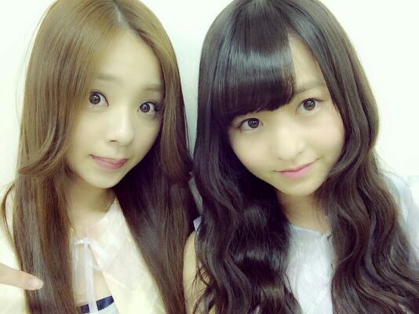
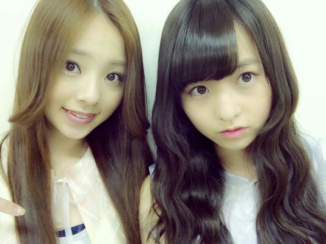

おはようございます\(*´∇｀*)/
ろってぃーだよ..*

もう ８月に突入しましたよ！
本当に あっとゆうまですね ^^
今年の夏は 乃木坂と一緒に楽しい夏を過ごしましょうね..*
ぁ. 「ここにいる理由」のMV撮影の時だから
まだヘアー カラー 明るいねん.♪わら

タイトルの『 125,8゜/45,2゜』ってのは、何のことか分かりますかねぇ(*´ω`*)？？？
そう!! 個人PVのやつですね.^^/
そう言えば、個人PVのことblogで触れてなかったな〜.と思いまして...
今回は 今までとガラッと違う 個人PVを撮りました.!!
演技系の作品ですね !
本当に楽しかったです.♪
私、演技は大好きなので、もっともっと撮りたかったって思う位でした..*
是非、まだ見てない方は、ろってぃーの個人PV見てくださいねん..*
わ〜
あすかがよく「皆、Rotty夢☆だもん.♪」って言ってくるよん*´`* 嬉しゅうキモチ。
では、のし。